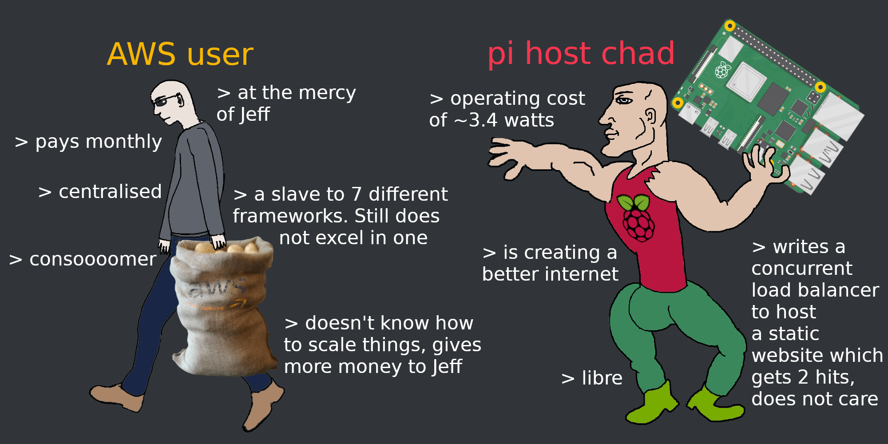

Raspberry pi web hosting

Ever wanted to host your own website without being at the mercy of Jeff!
If so this guide should help you setup a https enabled website.
What you need
To host on your pi you going to need a couple things:
1. Domain name such as www.Jack7E.xyz
2. Static IP address
3. Basic linux knowledge
If you have these already skip to the "Getting a global static ip" section further down the page.
Getting a domain
I highly recommend using Epik to purchase a domain. They have great reviews, good customer support and you can buy your domain name with crypto currency! This guide will also use use Epik but it should be easy to apply the steps to other domain name registers. Please note the Epik hyperlinks do contain referral links but do not be dissuaded by this as I expect to make practically nothing from it, if you do however use the link you may help me purchase some meme domain names for fun projects.
Getting a global static IP
This is the step that will be highly variable depending on your Internet Service Provider (ISP). If you don't know how to do this unfortunately the best advise is do an internet search of "_ISP_NAME_ get static IP" . In my case I had to log into my ISP's account find addons and add the static IP package.
Domain configuration
1. Purchase a domain name with Epik
or your domain register of choice.
2. Click the hamburger button highlighted by the red box below.
3. Click set dns and host records
4. Navigate to external hosts and then click add record.
Enter your static ip address (this should not be 192.168.0.1).
This step is to ensure traffic to your site (www.site_name.xyz) is redirected to your static IP.
Then later your website once a web server is setup to check for requests on port 80.
5. Navigate to CAA records and click add record. It should look something like the following image once done.
This step is so that we can generate a ssl certificate and enable https.
Pi setup
Here I assume you already have an operating system on your pi.
1. Open up a terminal and run the following command to find your devices local ip and broadcast addresses
sudo ifconfig | grep inet | grep broadcast
You should get the following output
Remember the two turquoise numbers you will need to add them to a file in the next step.
sudo vim /etc/dhcpcd.conf
If you are not familiar with the vim text editor replace vim with nano or geddit. You may need to run sudo apt-get install nano.
Once in a text editor find the example ip configuration and uncomment as shown, if there is no example add the uncommented lines
# Example static IP configuration:
#interface eth0
static ip_address=192.168.1.XX
static routers=192.168.1.YYY
static domain_name_servers=1.1.1.1
What we have just done is set a local static ip address (different from the ISP global static IP address)
to ensure the ip address doesn't change causing port forwarding issues later on. Then set the gate way to the known gateway.
Finally we set our dns to 1.1.1.1 which is a google domain name server. You may use a different one if you please.
3. Restart the dns by running the following 3 commands separately.
sudo systemctl daemon-reload
sudo systemctl restart systemd-resolved.service\n
sudo systemctl restart dhcpcd.service
4. run the next command separately to update, install openssl (for https) and install the apache webserver.
sudo apt update
sudo apt-get install openssl
sudo apt install apache2 -y
5. You should now have a file at /var/www/html/index.html all your website html and css should be placed inside this directory. Editing the file index.html will edit your website (You can type your pi's ip address in a browser to confirm this). But we still have a few more step to ensure the website can be reached via your domain name.
6. This step is to enable https simply run the following commands and enter your email address when prompted.
sudo apt-get install python-certbot-apache
sudo certbot --apache
Port forwarding the pi
This last step requires you to login to your router. Unfortunately this varies from device to device so I will give a high level overview.1. Find your router's ip address this information is sometimes on the router or easily found via an internet search such as "router_brand how to find ip"
2. Find the port forwarding setting this is usually in advance settings > firewall > port forwarding
3. Now you need to apply the the setting so that the ip address of the pi has the http and https ports enabled. If your router settings are confusing it should look something as follows:
pi_ip_address 80
pi_ip_address 443
Setup complete
Awesome you should now be able to view your website by entering your domain name in a browser. Make sure you remember to edit /var/www/html/index.html on your pi to update your site!I like to create the site in a different file and link it to /var/www/html/index.html via a symbolic link. For example the website code is stored in /home/pi/dev/mysite and you can run:
sudo ln -s /home/pi/dev/mysite/* /var/www/html
Any changes to files in /home/pi/dev/mysite reflect changes in /var/www/html/index.html. However, remember to run the command again if you add a new file.